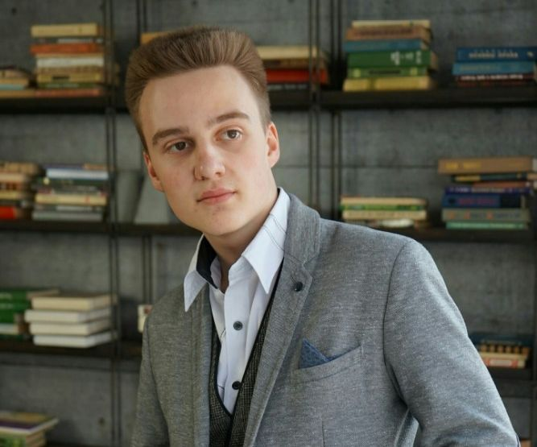

Nikon Halinouski
Contacts
Phone: +375 (44) 563-73-33
Email: nikon.galinovsky@yandex.com
About me
I’m a student of the third year of the BSUIR Affiliate “Minsk Radioengineering College”. My speciality is the “Information Technology Software” of the department of computer technology. I’m hardworking person. I have been practicing in different programming languages as Delphi, C#, JS and Python during college studying.
Skills:
- Python
- HTML, CSS, JS, Bootstrap
- React
- SQL, PostgreSQL
- C#
- Delphi
Project links:
GitHub
- https://github.com/GraindCheack/BookShop
- https://github.com/GraindCheack/final-practical-task
- https://github.com/GraindCheack/PythonHomework
- https://github.com/GraindCheack/Coursework
Codewars: https://www.codewars.com/users/GraindCheack
Experience
Introduction to python training at EPAM RD laboratory
EPAM systems inc. | 2019-07-23 - 2019-08-15
Education
“Software of mathematical information processing” Qualification – a technician programmer
BSUIR affiliate “Minsk radioengineering college” | 2017 - 2021
English
English level - A2